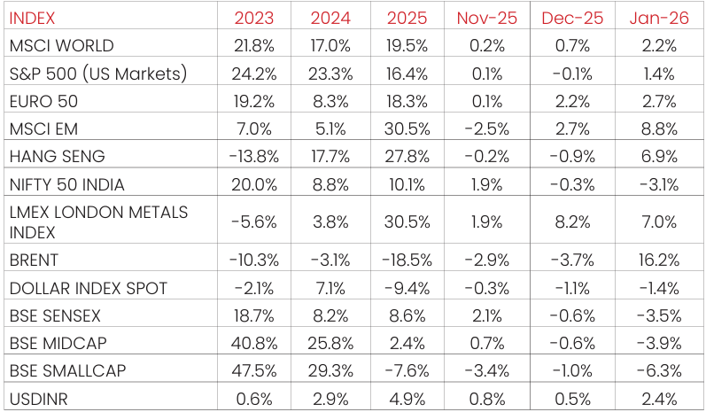

Macro and
Equity Market
Outlook
Equity Market
Outlook
GLOBAL MACRO & MARKETS
India’s NSE NIFTY 50 index ended the month of January 2026 in red (-3.1%).
Among major global indices, the Japanese NIKKEI (+5.9%), Morgan Stanley
Capital International (MSCI) World (+2.2%), the Euro 50 (+2.7%) and the
S&P 500 (+1.4%) ended the month of January 2026 with positive returns.
Performance was positive among Emerging Market (EM) indices, with the
MSCI EM, Hang Seng, BOVESPA Brazil recording sequential returns of
(+8.8%), (6.9%), and (+12.6%) respectively.
The London Metals Exchange (LME) Metals Index rose (+7.0%) in January
2026, as global trade tensions remained volatile. West Texas Intermediate
(WTI) and Brent Crude rose MoM, by (13.6%) and (16.2%), respectively, as
markets remained cautious given tariff uncertainties and geopolitical
concerns.
The Dollar index fell (-1.4%), through January 2026, with the US Dollar
(USD) appreciating vis-à-vis Emerging Market (EM) currencies (+1.6%) and
appreciating against the Indian Rupee (INR) on the spot market (+2.4%).
India 10Y G-Sec yields rose by 10.80 bps, while US 10Y G-Sec yields rose by
6.85 bps, and the German Bund yield fell by 1.20 bps, with rates settling at
6.69%, 4.23% and 2.84%, respectively.
Domestic Macro & Markets
The BSE SENSEX fell (-3.5%) in January 2026, in line with the NSE NIFTY
Index. The BSE Mid-cap index & the BSE Small-Cap index underperformed
the BSE SENSEX, falling by (-3.9%) & (-6.3%), over the month of January
2026, respectively. Sector-wise, Metals, PSU and Bankex were the top
outperformers over the month of January 2026, clocking (+5.5%), (+4.5%)
and (0.5%) respectively. Three out of BSE Sensex’s 13 major sectoral
indices ended the month of January 2026 in green.
Net Foreign Institutional Investors (FII) flows into equities were Negative
for January 2026 at –($3.97 Bn), following (-$2.51 Bn) in December 2026.
Domestic Institutional Investors (DIIs) remained net buyers of Indian
equities for the 29th consecutive month with flows of +$7.61 Bn in January
2026 compared to (+$8.10 Bn) In December 2025.
India's high frequency data update:
Record levels of Goods and Services (GST) collections, stable retail inflation,
deflated input inflation, rising core sector outputs, and elevated credit
growth augurs well for the Indian economy.
Purchasing Managers’ Index Manufacturing PMI:
India’s Purchasing Managers’ Index Manufacturing (PMI) in January 2026 rose
to 55.4 from 55.0 in December 2025, continuing to remain in the expansion
zone (>50) for the 51st straight month. The figure remained well above the
long-term average, signalling continued strength in the sector. The reading
indicates a solid improvement in operating conditions at the start of the year.
Factory output expanded at a faster pace, supported by robust domestic
demand, while new orders also increased, driven mainly by the domestic
market, with a modest rise in exports. Employment rose slightly, the fastest
pace in three months, as firms hired to meet higher workloads.
Goods and Services Tax (GST) Collection:
Gross collections of INR 1.93 Tn (+6.2% YoY) in January 2026 concluded the
forty sixth consecutive month of collections over the INR 1.4 Tn mark. This
growth was driven by both domestic transactions, which rose by 4.8%, and
import-related GST, which surged by 10.1%. Overall, the data indicates
stable revenue momentum with notable contributions from imports and
improved net realizations.
Core Sector Production:
The index of eight core sector industries grew (+3.7% YoY) in December
2025, against a 2.1% growth in November 2025. Five out of eight
constituent segments grew YoY, driven by Cement production (+13.5%
YoY), Fertilizers (+4.1% YoY), Steel (+6.9% YoY), Electricity Generation
(+5.3% YoY) & Coal (3.6% YoY).
Industrial Production:
Factory output growth as measured by the Index of Industrial Production
(IIP) grew YoY by (+7.8%) in December 2025, vs a growth of (+6.7%) YoY in
November 2025. Driven by positive growths in all the 3 major sectors-
Mining (+6.8% YoY), Manufacturing (+8.1% YoY) and Electricity (6.3% YoY).
Credit growth:
Scheduled Commercial Bank Credit growth for December 2025 rose to
(+14.4%) YoY vs (+11.4%) YoY as of December 2025. Agriculture and allied
activities credit in December 2025 grew to (+12.1%) YoY, while industrial
sector credit grew by (+13.3%) YoY, the services sector credit grew by
(+15.3%) YoY.
Inflation:
December’s 2025 Consumer Price Index (CPI) inflation rate accelerated
YoY to 1.33%, up from 0.71% in November. Food inflation slowed YoY to
(-2.71%), down from( -3.91%) in the previous month of November 2025
but remaining negative for the Seventh consecutive month. The Wholesale
Price Index (WPI) inflation rose sequentially in December 2025, with the
print at (+0.83%) YoY, primarily due to increase in prices of primary articles
and manufactured products.
Trade Deficit:
Indian Merchandise Exports rose by (+1.8%) YoY to $38.5 Bn in December
2025, supported by government measures, including export incentives
aimed at mitigating the economic impact of the 50% US tariffs imposed at
the end of August 2025. Imports rose by (+8.8%) YoY to $63.6 Bn, despite
a weak rupee and the decline in global energy benchmarks during the
period. Merchandise trade deficit rose to $25.04 Bn, growing 21.55% YoY.
Events to watch out for in February 2026:
Trade Related News flow:
Finalisation of the Trade deal with the EU
during January 2026 seen as a good positive for the markets as it aims to
significantly remove tariffs on over 90% of the goods traded between the
two like European automobiles and agricultural products, as well as Indian
textiles, leather, marine products, and gems and jewellery. Finalisation of
Indian bilateral agreement with the USA to be watched closely.
Federal Open Market Committee (FOMC Meet):
The US Federal The
outcome of the FOMC meeting held on January 28, 2026, was that the
Federal Reserve decided to keep the interest rate unchanged at 3.5% to
3.75%. This decision was made after a two-day meeting, , emphasizing a
cautious approach due to persistent inflation pressures and signs of
stabilizing labour market conditions. The FOMC's vote was not unanimous,
with two members dissenting and preferring a rate cut. The next Federal
Open Market Committee (FOMC) meet is scheduled for 17-18th March
2026.
The Reserve Bank of India Monetary Policy Committee (RBI MPC)
Meet:
The RBI's Monetary Policy Committee (MPC) conducted its
monetary policy meeting from 4th to 6th February 2026. After a detailed
assessment of the evolving macro-economic conditions and the economic
outlook, the MPC voted unanimously to keep the policy repo rate
unchanged at 5.25%. The decision comes amid an improved growth
backdrop following higher government spending outlined in the Union
Budget, the announcement of an India–US trade deal, and progress on the
India–EU free trade agreement, allowing the central bank to stay on hold
while assessing evolving conditions. The MPC is expected to meet next in
April 2026.
Other things to watch out for:
Organization of the Petroleum Exporting
Countries (OPEC+) has paused further increases for the first quarter of
2026 due to seasonal demand weakness and concerns about a global
supply surplus. The group recently reaffirmed this policy in a meeting on
January 4, 2026.
Geopolitical concerns with US military action against Venezuela,
Uncertainties in the Gaza strip & Russia-Ukraine tensions still ongoing
amidst other numerous conflicts.
Monthly Performance for Key Indices:

Source:NIMF Research, Bloomberg, RBI, Budget Document
Note: Market scenarios are not reliable indicators for current or future performance. The same should not be construed as investment advice or as any research report/research recommendation.
Past performance may or may not be sustained in future.
Note: Market scenarios are not reliable indicators for current or future performance. The same should not be construed as investment advice or as any research report/research recommendation.
Past performance may or may not be sustained in future.
Market View
Indian equity markets entered the year of 2026 regaining their previous
highs following last year’s correction, while valuations though off their
peaks, remain in line with long-term averages. Markets have witnessed a
narrow trend with large cap indices like Nifty 50 outperforming the
broader markets in calendar year 2025.
This trend continued in Jan’26 as well. Overall, the performance gap
widened between the large cap and small cap indices reflecting the selloff
in small cap stocks driven by relatively higher valuations
On positive note the recent Free Trade Agreement (FTA)/ trade deal
announcements first with European Union (EU) and then USA (details to
be finalized) may have positive impact on the market sentiment along with
potentially creating a platform for better growth possibilities and lower
currency volatility.
The Union Budget presented on Feb 01, 2026 showcased the efforts to
make India future ready with a focus on Biopharma, Data Centres,
Renewables, Logistics, Tourism, Data Centers, Semiconductors ISM 2.0,
High speed rail corridors, Inland waterway etc. Overall, the budget sets a
road-map for long term holistic growth across manufacturing, services,
consumption without compromising the fiscal prudence.
The earnings cycle seems to have bottomed out, with signs of a potential
recovery ahead. Corporate earnings are expected to trend higher on the
likely improvement in domestic growth/demand.
India's relative valuation to Emerging markets has moderated
meaningfully over the last year and more, creating a better base for global
investors.
However, with geopolitical worries in few geographies and growth
calibration in some economies we expect the short-term volatility to
remain elevated.
Asset allocation in line with the risk appetite of the investor is an
important tool to navigate any unanticipated volatility. While valuations
have moderated from the peaks of last year, overall economic recovery
and the global uncertainties needs to be monitored in this regard Large
Cap & Large Cap oriented diversified strategies along with hybrid funds
appear to be better placed on risk-reward basis, while Mid/Small cap
allocation may be considered in a staggered manner through systematic
investment with a long-term view.
Disclaimer:
The current fund philosophy may change in future depending on market conditions or fund manager’s views. The sectors mentioned
are not a recommendation to buy/sell in the said sectors. The scheme may or may not have future position in the said sectors.
The information herein above is meant only for general reading purposes and the views being expressed only constitute opinions and therefore cannot be considered as guidelines, recommendations or as a professional guide for the readers. The document has been prepared on the basis of publicly available information, internally developed data and other sources believed to be reliable. The sponsors, the Investment Manager, the Trustee or any of their directors, employees, Associates or representatives (‘entities & their Associate”) do not assume any responsibility for, or warrant the accuracy, completeness, adequacy and reliability of such information. Recipients of this information are advised to rely on their own analysis, interpretations & investigations. Readers are also advised to seek independent professional advice in order to arrive at an informed investment decision. Entities & the associates including persons involved in the preparation or issuance of this material, shall not be liable in any way for any direct, indirect, special, incidental, consequential, punitive, or exemplary damages, including on account of lost profits arising from the information contained in this material. Recipient alone shall be fully responsible for any decision taken on the basis of this document.
The information herein above is meant only for general reading purposes and the views being expressed only constitute opinions and therefore cannot be considered as guidelines, recommendations or as a professional guide for the readers. The document has been prepared on the basis of publicly available information, internally developed data and other sources believed to be reliable. The sponsors, the Investment Manager, the Trustee or any of their directors, employees, Associates or representatives (‘entities & their Associate”) do not assume any responsibility for, or warrant the accuracy, completeness, adequacy and reliability of such information. Recipients of this information are advised to rely on their own analysis, interpretations & investigations. Readers are also advised to seek independent professional advice in order to arrive at an informed investment decision. Entities & the associates including persons involved in the preparation or issuance of this material, shall not be liable in any way for any direct, indirect, special, incidental, consequential, punitive, or exemplary damages, including on account of lost profits arising from the information contained in this material. Recipient alone shall be fully responsible for any decision taken on the basis of this document.